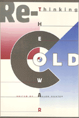

A path-breaking collection of essays by cutting-edge authors that reassess the Cold War since the fall of communism
A path-breaking collection of essays by cutting-edge authors that reassess the Cold War since the fall of communism


 A path-breaking collection of essays by cutting-edge authors that reassess the Cold War since the fall of communism
A path-breaking collection of essays by cutting-edge authors that reassess the Cold War since the fall of communism

|  |
Rethinking the Cold Waredited by Allen Hunterpaper EAN: 978-1-56639-562-5 (ISBN: 1-56639-562-3) |
The end of the Cold War should have been an occasion to reassess its origins, history, significance, and consequences. Yet most commentators have restated positions already developed during the Cold War. They have taken the break-up of the Soviet Union, the shift toward capitalism, and electoral politics in Eastern Europe and countries formerly in the USSR as evidence of a moral and political victory for the United States that needs no further elaboration.
This collection of essays offers a more complex and nuanced analysis of Cold War history. It challenges the prevailing perspective, which editor Allen Hunter terms "vindicationism." Writing from different disciplinary and conceptual vantage points, the contributors to this collection invite a rethinking of what the Cold War was, how fully it defined the decades after World War II, what forces sustained it, and what forces led to its demise. By exploring a wide range of central themes of the era, Rethinking the Cold War widens the discussion of the Cold War's place in post-war history and intellectual life.
Excerpt available at www.temple.edu/tempress
"This collection is striking for bringing together some of the most perceptive revisionist scholars..."
—International Affairs
"...Rethinking the Cold War illustrates how scholars from a number of different disciplines are addressing the limits of vindicationist scholarship. It is sure to encourage further research outside the bounds of the narrow bipolar paradigm created by the Cold War political context."
—Labor History
Introduction: The Limits of Vindicationist Scholarship – Allen Hunter
Part I. Creating the Cold War
1. Rethinking the Cold War and After: From Containment to Enlargement – Walter LaFeber
2. Rethinking the Division of Germany – Carolyn Einsenberg
3. Revising Post-Revisionism: Credibility and Hegemony in the Early Cold War – Thomas D. Lairson
Part II. Decentering the Cold War: Looking South
4. A Requiem for the Cold War: Reviewing the History of International Relations since 1945 – Cary Fraser
5. Cold War, Capital Accumulation, and Labor Control in Latin America: The Closing of a Cycle, 1945-1990 – Ian Roxborough
6. Castro in Harlem: A Cold War Watershed – Brenda Gayle Plummer
Part III. Explaining the End of the Cold War
7. The End of the Cold War and Why We Failed to Predict It – Michael Cox
8. Myth Making about the Character of the Cold War – Charles W. Kegley Jr. and Shannon Lindsey Blanton
9. Nations and Blocs: Toward a Theory of the Political Economy of the Inter-State Model in Europe – Mary Kaldor
10. Warsaw Pact Socialism and NATO Capitalism: Disintegrating Blocs, 1973-1989 – Harriet Friedmann
11. After the Cold War: International Relations in the Period of the latest "New World Order" – Ronen Palan
Part IV. Disciplined Knowledge and Alternative Visions
12. Academic Research Protocols and the Pax Americana: American Economics During the Cold War Era – Michael A. Bernstein
13. Hannah Arendt as Dissenting Intellectual – Jeffrey C. Isaac
14. William Appleman Williams: Grassroots Against Empire – Paul Buhle
About the Contributors
Allen Hunter is Administrative Director, A.E. Havens Center for the Study of Social Structure and Social Change at the University of Wisconsin.
Critical Perspectives on the Past, edited by Susan Porter Benson, Stephen Brier, and Roy Rosenzweig.
Critical Perspectives on the Past, edited by Susan Porter Benson, Stephen Brier, and Roy Rosenzweig, is concerned with the traditional and nontraditional ways in which historical ideas are formed. In its attentiveness to issues of race, class, and gender and to the role of human agency in shaping events, the series is as critical of traditional historical method as content. Emphasizing that history is itself an interpretation of material events, the series demonstrates that the historian's choices of subject, narrative technique, and documentation are politically as well as intellectually constructed.
© 2015 Temple University. All Rights Reserved. This page: http://www.temple.edu/tempress/titles/1134_reg.html.